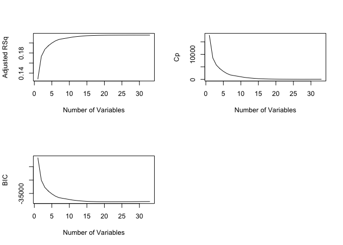
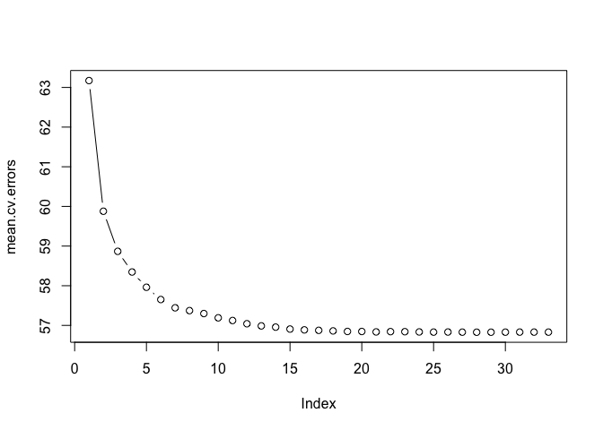
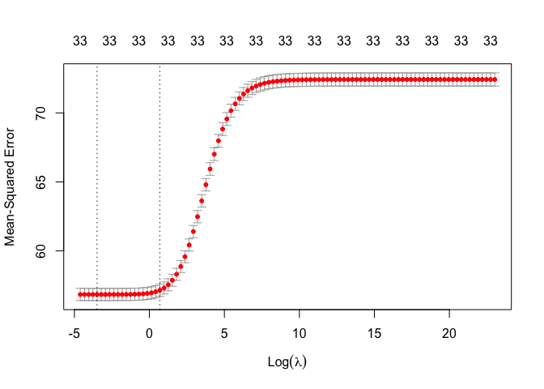

Variable Selection
GEO 200CN - Quantitative Geography
Professor Noli Brazil
May 20, 2024
In choosing a predictive model, you might want to run different types of models - say, logistic vs. linear regression - and use the cross validation techniques we learned from last lab to choose the model that provides the best predictions. Rather than choosing between different models of varying specification, suppose that we have available a set of variables to predict an outcome of interest and want to choose a subset of those variables that accurately predict the outcome. That is, you have decided on the type of model, and want to select the set of variables among a large pool that provides the best prediction. The driving force behind variable selection is the desire for a parsimonious regression model (one that is simpler and easier to interpret) and the need for greater accuracy in prediction. In this lab guide, we will go through variable selection methods.
The objectives of this lab are as follows
- Learn how to run forward and backward stepwise selection
- Learn how to run ridge and lasso regression
To help us accomplish these objectives, we will use a data set from the 2017 Behavioral Risk Factor Surveillance System (BRFSS), an annual survey conducted by the Centers for Disease Control and Prevention that collects state data about U.S. residents regarding their health-related risk behaviors, chronic health conditions, and use of preventive services, to examine the association between individual health status and a set of demographic and socioeconomic characteristics. The lab follows closely this week’s readings in ISLR.
Installing and loading packages
We’ll be using a few new packages in this lab. First, install them if you haven’t already.
install.packages(c("leaps", "glmnet"))Second, load all necessary packages.
library(broom)
library(dismo)
library(boot)
library(tidyverse)
library(leaps)
library(glmnet)Bring in the data
Download the data for this lab guide from Canvas in the Week 8 Lab and Assignment folder. Bring in the BRFSS file brfss17.csv file into R.
brfss17 <- read_csv("brfss17.csv")The data contain individuals as units of observations. Here, we’ll predict the numeric variable physhlth, which gives the number of days in the past month that respondents felt that they were not in good physical health. Our independent variables are age agec, gender male, educational attainment educ, race/ethnicity race_eth, whether the individual indicates they smoke, employment status employ, marital status marst, BMI bmi, health insurance ins, income inc, and indicators of whether the individual has high blood pressure bphigh, high cholesterol toldhi, and was ever diagnosed with a heart attack cvdinfr, a Stroke cvdstrk, Asthma asthma, Arthritis havarth, or Diabetes diabete. A record layout of the data can be found here.
Our research question is: What set of variables provide the best predictive quality of a person’s physical health?
Subset Selection
Subset selection refers to the task of finding a small subset of the available independent variables that does a good job of predicting the dependent variable. We then fit a statistical model using just the reduced set of variables.
Forward and Backward Stepwise Selection
The purpose of forward and backward stepwise selection is to iteratively fit a regression model by adding predictors one-by-one to a model with no variables (known as a null model) or subtracting predictors one-by-one from a full model (all predictors are included). The goal is to find the best combination of predictors, where best is based on some measure of predictive quality.
We can use the regsubsets() function, which is a part of
the leaps package, to perform the best subset selection
methods described in ISLR Ch 6.1. Let’s first run a forward stepwise
selection (see ISLR 6.1.2) to find the best predictors for poor physical
health days. The syntax is the same as lm() and
glm(), but we add the argument
method = "forward" to indicate forward stepwise
selection.
regfit1.fwd <- regsubsets(physhlth ~ bmi + race_eth + agec + male + smoke + educ +
inc + employ + marst + ins + bphigh + toldhi +
cvdinfr + cvdstrk + asthma + havarth + diabete,
data = brfss17,
method = "forward")A summary of results.
summary(regfit1.fwd)## Subset selection object
## Call: regsubsets.formula(physhlth ~ bmi + race_eth + agec + male +
## smoke + educ + inc + employ + marst + ins + bphigh + toldhi +
## cvdinfr + cvdstrk + asthma + havarth + diabete, data = brfss17,
## method = "forward")
## 33 Variables (and intercept)
## Forced in Forced out
## bmi FALSE FALSE
## race_ethnh black FALSE FALSE
## race_ethnh multirace FALSE FALSE
## race_ethnh other FALSE FALSE
## race_ethnhwhite FALSE FALSE
## agec(24,39] FALSE FALSE
## agec(39,59] FALSE FALSE
## agec(59,79] FALSE FALSE
## agec(79,99] FALSE FALSE
## maleMale FALSE FALSE
## smokeFormer FALSE FALSE
## smokeNeverSmoked FALSE FALSE
## educ1somehs FALSE FALSE
## educ2hsgrad FALSE FALSE
## educ3somecol FALSE FALSE
## educ4colgrad FALSE FALSE
## inc FALSE FALSE
## employnilf FALSE FALSE
## employretired FALSE FALSE
## employunable FALSE FALSE
## marstdivorced FALSE FALSE
## marstmarried FALSE FALSE
## marstnm FALSE FALSE
## marstseparated FALSE FALSE
## marstwidowed FALSE FALSE
## ins FALSE FALSE
## bphigh FALSE FALSE
## toldhi FALSE FALSE
## cvdinfr FALSE FALSE
## cvdstrk FALSE FALSE
## asthma FALSE FALSE
## havarth FALSE FALSE
## diabete FALSE FALSE
## 1 subsets of each size up to 8
## Selection Algorithm: forward
## bmi race_ethnh black race_ethnh multirace race_ethnh other
## 1 ( 1 ) " " " " " " " "
## 2 ( 1 ) " " " " " " " "
## 3 ( 1 ) " " " " " " " "
## 4 ( 1 ) " " " " " " " "
## 5 ( 1 ) " " " " " " " "
## 6 ( 1 ) " " " " " " " "
## 7 ( 1 ) " " " " " " " "
## 8 ( 1 ) " " " " " " " "
## race_ethnhwhite agec(24,39] agec(39,59] agec(59,79] agec(79,99]
## 1 ( 1 ) " " " " " " " " " "
## 2 ( 1 ) " " " " " " " " " "
## 3 ( 1 ) " " " " " " " " " "
## 4 ( 1 ) " " " " " " " " " "
## 5 ( 1 ) " " " " " " " " " "
## 6 ( 1 ) " " " " " " " " " "
## 7 ( 1 ) " " " " " " " " " "
## 8 ( 1 ) " " " " " " " " " "
## maleMale smokeFormer smokeNeverSmoked educ1somehs educ2hsgrad
## 1 ( 1 ) " " " " " " " " " "
## 2 ( 1 ) " " " " " " " " " "
## 3 ( 1 ) " " " " " " " " " "
## 4 ( 1 ) " " " " " " " " " "
## 5 ( 1 ) " " " " " " " " " "
## 6 ( 1 ) " " " " " " " " " "
## 7 ( 1 ) " " " " " " " " " "
## 8 ( 1 ) " " " " "*" " " " "
## educ3somecol educ4colgrad inc employnilf employretired employunable
## 1 ( 1 ) " " " " " " " " " " "*"
## 2 ( 1 ) " " " " " " " " " " "*"
## 3 ( 1 ) " " " " "*" " " " " "*"
## 4 ( 1 ) " " " " "*" " " " " "*"
## 5 ( 1 ) " " " " "*" " " " " "*"
## 6 ( 1 ) " " " " "*" " " " " "*"
## 7 ( 1 ) " " " " "*" " " " " "*"
## 8 ( 1 ) " " " " "*" " " " " "*"
## marstdivorced marstmarried marstnm marstseparated marstwidowed ins
## 1 ( 1 ) " " " " " " " " " " " "
## 2 ( 1 ) " " " " " " " " " " " "
## 3 ( 1 ) " " " " " " " " " " " "
## 4 ( 1 ) " " " " " " " " " " " "
## 5 ( 1 ) " " " " " " " " " " " "
## 6 ( 1 ) " " " " " " " " " " " "
## 7 ( 1 ) " " " " " " " " " " " "
## 8 ( 1 ) " " " " " " " " " " " "
## bphigh toldhi cvdinfr cvdstrk asthma havarth diabete
## 1 ( 1 ) " " " " " " " " " " " " " "
## 2 ( 1 ) " " " " " " " " " " "*" " "
## 3 ( 1 ) " " " " " " " " " " "*" " "
## 4 ( 1 ) " " " " " " " " " " "*" "*"
## 5 ( 1 ) " " " " "*" " " " " "*" "*"
## 6 ( 1 ) " " " " "*" " " "*" "*" "*"
## 7 ( 1 ) " " " " "*" "*" "*" "*" "*"
## 8 ( 1 ) " " " " "*" "*" "*" "*" "*"The regsubsets() function identifies the best model that
contains a given number of predictors, where best is quantified
as the lowest residual sum of squares (RSS). An asterisk indicates that
a given variable is included in the corresponding best model. For
example, the summary output indicates that the best two-variable model
contains employunable and havarth. When interpreting
these results, remember that categorical/qualitative variables are
separated into dummy variables. Therefore, the variables
employnilf, employretired and employunable
correspond to separate dummies for the categories “not in labor force”,
“retired”, and “unable to work” (the category “Employed” is the
reference) in the employ variable.
You can extract the coefficients and their values for the best
j-variable model by using the coef() function. For example,
to get the coefficients for the best 2-variable model, type in:
coef(regfit1.fwd, 2)## (Intercept) employunable havarth
## 2.141179 11.496099 3.955133By default, the function only reports results up to the best
eight-variable model, but you can use the nvmax option to
return as many variables as desired. For example, let’s try a 33
variable model, with 33 representing the max number of predictors we can
include in a model.
regfit2.fwd <- regsubsets(physhlth ~ bmi + race_eth + agec + male + smoke + educ +
inc + employ + marst + ins + bphigh + toldhi +
cvdinfr + cvdstrk + asthma + havarth + diabete,
data = brfss17,
method = "forward",
nvmax = 33)After getting the best model for each given number of predictors, we
need to then select the best model across all sets 1 through
nvmax. Following ISLR, we can examine the adjusted R2, Cp and the Bayesian
Information Criterion (BIC) from the summary() output.
Let’s examine the adjusted R2, which is discussed on
page 212 in ISLR. Let’s save a summary of the model in an object, and
then extract the adjusted R2 use base R
convention.
regfit2.fwd.summary <- summary(regfit2.fwd)
regfit2.fwd.summary$adjr2## [1] 0.1277702 0.1732549 0.1872198 0.1944227 0.1997421 0.2040115 0.2068957
## [8] 0.2081920 0.2093504 0.2105600 0.2117409 0.2125584 0.2132344 0.2138314
## [15] 0.2143430 0.2146413 0.2148545 0.2150567 0.2151948 0.2152931 0.2153752
## [22] 0.2154121 0.2154404 0.2154770 0.2155044 0.2155138 0.2155498 0.2155559
## [29] 0.2155538 0.2155509 0.2155471 0.2155545 0.2155499We see that the adjusted R2 increases from 12.8 with one variable to 21.6 with all variables.
We can look at all fit indicators to decide which model is the best.
Plotting adjusted R2, Cp, and BIC for all of the
models at once can help us decide which model to select. We’ll use the
basic plot() function here, and note the
type="l" option tells R to connect the plotted points with
lines.
par(mfrow = c(2,2))
plot(regfit2.fwd.summary$adjr2 ,
xlab =" Number of Variables ",
ylab =" Adjusted RSq ", type ="l")
plot(regfit2.fwd.summary$cp,
xlab =" Number of Variables ",
ylab ="Cp",
type ='l')
plot(regfit2.fwd.summary$bic ,
xlab =" Number of Variables ",
ylab =" BIC ",
type ='l')
Question 1: Which model does the adjusted R2 indicate is the best? In your answer, identify the specific variables that are included in the best model.
Question 2: Run backwards stepwise selection with nvmax = 33. Which model is identified as the best model based on adjusted R2? In your answer, identify the specific variables that are included in the best model.
Cross-validation error
We just saw that it is possible to choose among a set of models of different sizes using BIC, adjusted R2 and other best fit metrics. We will now consider how to do this within a cross-validation framework. Here, you will use cross-validation to find the best model with the lowest validation error. This will combine the methods from ISLR Chapter 5 and Chapter 6, which is described on page 213 in ISLR.
We will choose among the best models of different sizes using cross
validation. This approach is somewhat involved, as we must perform
subset selection within each of the k training sets. Despite
this, subsetting in R makes this job quite easy. First, we create a
vector that allocates each observation to one of k = 10 folds
using the fabulous function kfold(). We set the seed for
reproducability.
set.seed(1234)
brfss17 <- brfss17 %>%
mutate(folds = kfold(brfss17, k = 10))
table(brfss17$folds)##
## 1 2 3 4 5 6 7 8 9 10
## 15811 15810 15811 15811 15811 15810 15811 15811 15810 15811and we create an empty matrix named cv.errors in which we will store the results. Rows represent the k = 10 folds and columns represent the complete set of variables (33) we are including in the model (so first column is for the 1-variable model, second is the 2-variable model and so on).
k=10
cv.errors = matrix(NA ,k,33, dimnames =list(NULL , paste (1:33) ))
cv.errors ## 1 2 3 4 5 6 7 8 9 10 11 12 13 14 15 16 17 18 19 20 21 22 23 24
## [1,] NA NA NA NA NA NA NA NA NA NA NA NA NA NA NA NA NA NA NA NA NA NA NA NA
## [2,] NA NA NA NA NA NA NA NA NA NA NA NA NA NA NA NA NA NA NA NA NA NA NA NA
## [3,] NA NA NA NA NA NA NA NA NA NA NA NA NA NA NA NA NA NA NA NA NA NA NA NA
## [4,] NA NA NA NA NA NA NA NA NA NA NA NA NA NA NA NA NA NA NA NA NA NA NA NA
## [5,] NA NA NA NA NA NA NA NA NA NA NA NA NA NA NA NA NA NA NA NA NA NA NA NA
## [6,] NA NA NA NA NA NA NA NA NA NA NA NA NA NA NA NA NA NA NA NA NA NA NA NA
## [7,] NA NA NA NA NA NA NA NA NA NA NA NA NA NA NA NA NA NA NA NA NA NA NA NA
## [8,] NA NA NA NA NA NA NA NA NA NA NA NA NA NA NA NA NA NA NA NA NA NA NA NA
## [9,] NA NA NA NA NA NA NA NA NA NA NA NA NA NA NA NA NA NA NA NA NA NA NA NA
## [10,] NA NA NA NA NA NA NA NA NA NA NA NA NA NA NA NA NA NA NA NA NA NA NA NA
## 25 26 27 28 29 30 31 32 33
## [1,] NA NA NA NA NA NA NA NA NA
## [2,] NA NA NA NA NA NA NA NA NA
## [3,] NA NA NA NA NA NA NA NA NA
## [4,] NA NA NA NA NA NA NA NA NA
## [5,] NA NA NA NA NA NA NA NA NA
## [6,] NA NA NA NA NA NA NA NA NA
## [7,] NA NA NA NA NA NA NA NA NA
## [8,] NA NA NA NA NA NA NA NA NA
## [9,] NA NA NA NA NA NA NA NA NA
## [10,] NA NA NA NA NA NA NA NA NANow we write a for loop that performs cross-validation. The loop is similar to the one we used to do cross-validation on California temperature in the last lab. In the kth fold, the elements of folds that equal k are in the test (or validation) set, and the remainder are in the training set. We make our predictions for each model size, compute the test errors on the appropriate subset, and store them in the appropriate slot in the matrix cv.errors.
There is a complication: there is no predict() method
for regsubsets() like there is for glm() or
lm(). Fortunately, ISLR created a predict function for us
to use for regsubsets() objects. I copy and paste their
code below. If you would like to learn how this function was created,
see ISLR 6.5.3.
predict.regsubsets = function(object ,newdata ,id ,...) {
form =as.formula(object$call[[2]])
mat = model.matrix(form, newdata )
coefi =coef(object ,id=id)
xvars = names(coefi)
mat [, xvars ]%*%coefi
}Now the for loop. Remember, for each fold k, we need to run the forward stepwise regression, and then for each best model of 1, 2, … 33 variables, we make the prediction. So, we have a 10 (fold) by 33 (models) matrix of error rates.
for (j in 1:k){
best.fit = regsubsets(physhlth ~ bmi + race_eth + agec + male + smoke +
educ + inc + employ + marst + ins + bphigh +
toldhi + cvdinfr + cvdstrk + asthma + havarth +
diabete,
data = filter(brfss17, folds != j),
method = "forward",
nvmax = 33)
for (i in 1:33) {
pred= predict.regsubsets(best.fit , filter(brfss17, folds == j), id=i)
pred2 <- (dplyr::select(filter(brfss17, folds == j), physhlth) - pred)^2
cv.errors[j,i]= mean(pred2$physhlth)
}
}This has given us a 10×33 matrix, of which the (i, j)th
element corresponds to the test MSE for the ith cross-validation fold
for the best j-variable model. We use the apply()
function to average over the columns of this matrix in order to obtain a
vector for which the jth element is the cross-validation error
for the j-variable model (see more about the apply function here).
mean.cv.errors =apply(cv.errors ,2, mean)
mean.cv.errors## 1 2 3 4 5 6 7 8
## 63.17279 59.87841 58.86750 58.34605 57.96128 57.65206 57.44342 57.37276
## 9 10 11 12 13 14 15 16
## 57.29870 57.19102 57.12315 57.04165 56.98713 56.95636 56.90768 56.88672
## 17 18 19 20 21 22 23 24
## 56.87541 56.86083 56.84728 56.84648 56.83535 56.84263 56.84084 56.83513
## 25 26 27 28 29 30 31 32
## 56.83088 56.83287 56.82971 56.82791 56.82835 56.82959 56.83118 56.83100
## 33
## 56.83043The model with the lowest error rate is
min(mean.cv.errors)## [1] 56.82791which corresponds to the 28-variable model. Let’s plot to visualize
par(mfrow =c(1 ,1))
plot( mean.cv.errors , type='b')
Question 3: What are the variables and their coefficient values associated with the 28-variable model?
Shrinkage Methods
The basis behind shrinkage methods is to shrink the coefficients towards 0. Why would shrunk coefficients be better? This introduces bias, but may significantly decrease the variance of the estimates. If the latter effect is larger, this would decrease the test error. The driving force behind variable selection: the need for greater accuracy in prediction. In a prediction context, there is less concern about the values of the components on the right-hand side, rather interest is on the total contribution. We’ll cover two shrinkage methods: ridge and lasso regression. If you want to dig deep into the math, check ISLR Ch. 6.2. Otherwise, follow the conceptual pathway rather than getting too deep (or lost) in the weeds.
Ridge and Lasso Regression
We can fit ridge and lasso regression models using the function
glmnet() which is a part of the glmnet
package. This function has slightly different syntax from other
model-fitting functions that we have encountered thus far in this class
(e.g. lm(), glm(), lagsarlm()).
In particular, we must pass in a matrix x of independent
variables rather than a data frame as well as a y vector.
The model.matrix() function is particularly useful for
creating x; not only does it produce a matrix corresponding to
the 33 predictors but it also automatically transforms any qualitative
variables into dummy variables. The latter property is important because
glmnet() can only take numerical, quantitative inputs.
Create x using model.matrix() and set y
as the response variable brfss17$physhlth.
x <- model.matrix(physhlth ~., dplyr::select(brfss17, physhlth, bmi, race_eth,
agec, male, smoke , educ, inc, employ,
marst, ins, bphigh, toldhi, cvdinfr,
cvdstrk, asthma, havarth, diabete))[, -1]
y <- brfss17$physhlthWe’ve got our pieces to plug into glmnet(). The function
has an alpha argument that determines what type of model is fit. If
alpha=0 then a ridge regression model is fit, and if
alpha=1 then a lasso model is fit. We also need to specify
the argument lambda.
grid <-10^seq(10,-2, length =100)
regfit.ridge = glmnet(x,y,alpha =0, lambda =grid )Recall from ISLR 6.2.3, lambda is our key tuning parameter. By
default the glmnet() function performs ridge regression for
an automatically selected range of lambda values. However,
here we have chosen to implement the function over a grid of 100 values
ranging from lambda = 1010 to lambda =
10−2. As we will see, we can
also compute model fits for a particular value of lambda that is not one
of the original grid values. Note that by default, the
glmnet() function standardizes the variables so that they
are on the same scale. To turn off this default setting, use the
argument standardize = FALSE.
Associated with each value of lambda is a vector of ridge regression
coefficients, stored in a matrix that can be accessed by
coef(). In this case, it is a 34×100 matrix, with 34 rows
(one for each predictor, plus an intercept) and 100 columns (one for
each value of lambda).
dim(coef(regfit.ridge))## [1] 34 100As ISLR describes, we expect the coefficient estimates to be much smaller when a large value of lambda is used, as compared to when a small value of lambda is used. These are the coefficients when lambda = 11498
regfit.ridge$lambda[50]## [1] 11497.57coef(regfit.ridge)[,50]## (Intercept) bmi race_ethnh black
## 4.084313e+00 1.268837e-04 2.626554e-04
## race_ethnh multirace race_ethnh other race_ethnhwhite
## 1.066839e-03 -3.761764e-04 -2.111790e-04
## agec(24,39] agec(39,59] agec(59,79]
## -1.408315e-03 -4.585996e-06 8.351994e-04
## agec(79,99] maleMale smokeFormer
## 1.053666e-03 -6.639874e-04 6.756729e-04
## smokeNeverSmoked educ1somehs educ2hsgrad
## -1.428837e-03 2.575934e-03 9.878735e-04
## educ3somecol educ4colgrad inc
## 5.819408e-04 -1.629427e-03 -1.103627e-03
## employnilf employretired employunable
## 3.085549e-04 7.601816e-04 9.529839e-03
## marstdivorced marstmarried marstnm
## 1.411200e-03 -1.160753e-03 -3.079830e-04
## marstseparated marstwidowed ins
## 2.114507e-03 1.287844e-03 -2.362022e-05
## bphigh toldhi cvdinfr
## 2.071257e-03 1.553035e-03 4.122153e-03
## cvdstrk asthma havarth
## 4.690407e-03 2.345151e-03 3.689490e-03
## diabete
## 3.111607e-03In contrast, here are the coefficients when lambda = 705.
regfit.ridge$lambda[60]## [1] 705.4802coef(regfit.ridge)[,60]## (Intercept) bmi race_ethnh black
## 4.0504905434 0.0020005999 0.0037397803
## race_ethnh multirace race_ethnh other race_ethnhwhite
## 0.0169757526 -0.0057351102 -0.0031814796
## agec(24,39] agec(39,59] agec(59,79]
## -0.0218565403 0.0002131867 0.0128217695
## agec(79,99] maleMale smokeFormer
## 0.0162648940 -0.0105069817 0.0103408837
## smokeNeverSmoked educ1somehs educ2hsgrad
## -0.0224062522 0.0404244624 0.0153098275
## educ3somecol educ4colgrad inc
## 0.0090557469 -0.0254009094 -0.0174243586
## employnilf employretired employunable
## 0.0051264463 0.0116170232 0.1521595719
## marstdivorced marstmarried marstnm
## 0.0220844534 -0.0180530037 -0.0048032994
## marstseparated marstwidowed ins
## 0.0333203184 0.0197562125 -0.0003278925
## bphigh toldhi cvdinfr
## 0.0324397431 0.0243132571 0.0651214899
## cvdstrk asthma havarth
## 0.0741552994 0.0373256610 0.0585609896
## diabete
## 0.0490685846OK, so which lambda do we go with? In general, instead of arbitrarily
choosing a lambda, it would be better to use our new best pal
cross-validation to choose the value of this tuning parameter. This is
described on page 227 in ISLR. Instead of running a for loop, we can do
this using the built-in cross-validation function,
cv.glmnet(). By default, the function
cv.glmnet() performs ten-fold cross-validation, though this
can be changed using the argument folds. Note that we set a
random seed first so our results will be reproducible, because the
choice of the cross-validation folds is random.
set.seed(1234)
cv.out =cv.glmnet(x,y, alpha =0, lambda = grid)We can plot the mean squared error by lambda
plot(cv.out)
But let’s get the lambda that minimizes the error.
bestlam =cv.out$lambda.min
bestlam## [1] 0.03053856We see that the value of lambda that results in the smallest cross-validation error is 0.03053856.
We’ve got our best lambda, now we fit the ridge regression.
out <- glmnet(x,y,alpha =0, lambda = bestlam)The ridge regression coefficients for our new value of lambda is
coef(out)## 34 x 1 sparse Matrix of class "dgCMatrix"
## s0
## (Intercept) 2.830499147
## bmi 0.047532909
## race_ethnh black -0.755931016
## race_ethnh multirace 0.594441633
## race_ethnh other 0.089154005
## race_ethnhwhite 0.198880924
## agec(24,39] 0.446930184
## agec(39,59] 0.535009679
## agec(59,79] -0.146020858
## agec(79,99] 0.074366529
## maleMale -0.256979833
## smokeFormer -0.581880096
## smokeNeverSmoked -0.948514406
## educ1somehs 0.002260339
## educ2hsgrad -0.180086678
## educ3somecol -0.003100523
## educ4colgrad -0.202204595
## inc -0.533779319
## employnilf 1.265765977
## employretired 1.010321146
## employunable 9.768290932
## marstdivorced 0.031915815
## marstmarried -0.269647318
## marstnm -0.322224688
## marstseparated 0.339368048
## marstwidowed -0.494083775
## ins 0.065772033
## bphigh 0.522395761
## toldhi 0.298632337
## cvdinfr 2.226214922
## cvdstrk 2.276251323
## asthma 1.499765561
## havarth 2.918022579
## diabete 1.488135575Unlike stepwise regression, which controls the complexity of the model by restricting the number of predictors, ridge regression keeps all of the predictor variables in the model, and shrinks the coefficients toward zero.
Least absolute shrinkage and selection operator (Lasso) performs variable selection and regularization to increase prediction accuracy of the model…the only difference to ridge is that the regularization term is an absolute value. So instead of squaring the slope, which is done in ridge regression, we take the absolute value. As a result Lasso regression can increase lambda then set irrelevant parameters to 0 (Ridge will just shrink them but not set to 0) — relevant parameters might shrink a little bit in both too. The advantage here is that Lasso can exclude useless variables — so if you have a lot of variables it might be preferable. However, if most variables are useful then Ridge regression would probably work better.
The above procedure uses cross-validation to decide which lambda to choose. But what if you wanted to decide whether ridge regression is better than our other shrinkage method, the lasso? You can separate your data set into training and test sets, run each model on the training set, and then calculate RMSE or MSE using the test sets.
Question 4: Use 10-fold cross validation to find the best value of the tuning parameter for Lasso regression.
Question 5: Using the tuning parameter we identified in
the lab guide for Ridge and the one you identified in Question 4 for
Lasso, use 10-fold cross validation to choose between Ridge and Lasso
regression models based on RMSE? Use the RMSE function you created in
last lab to calculate the RMSE. Hint: You will be using similar code
from last lab to calculate 10 RMSEs for each model, take the mean of the
10 RMSEs, and compare this mean between Ridge and Lasso. Note that
unlike regsubsets(), the regular predict()
function works for glmnet().

This
work is licensed under a
Creative
Commons Attribution-NonCommercial 4.0 International License.
Website created and maintained by Noli Brazil